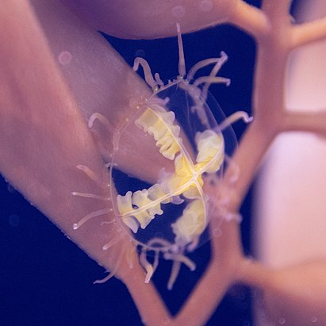
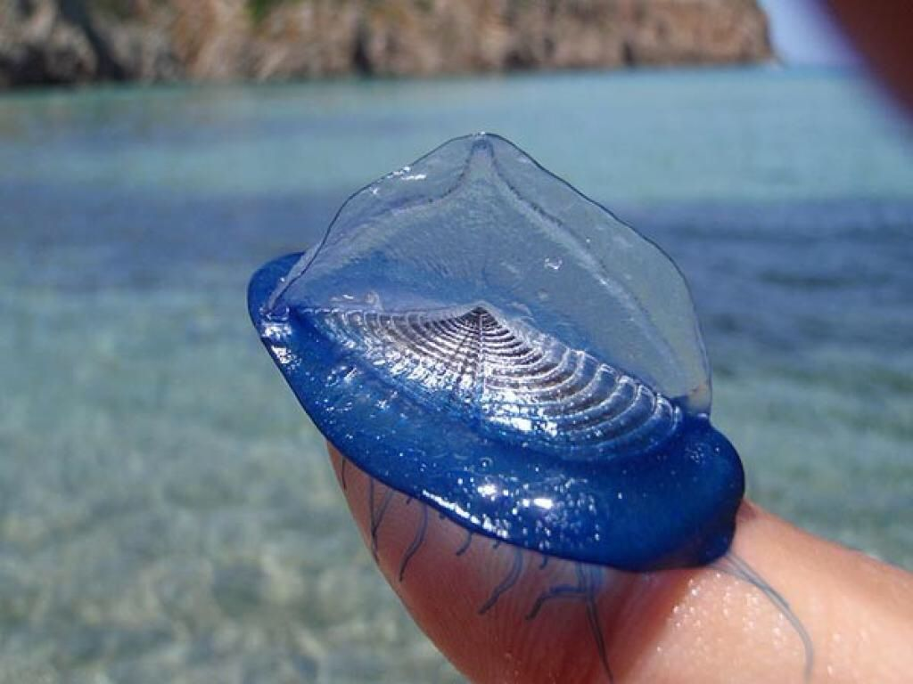

Рассмотрим некоторых представителей этой категории.
Медуза-крестовик.
Ядовитая гидромедуза, обитающая в прибрежных водах северной части Тихого океана (от Китая до Калифорнии). Небольшая популяция (возможно, завозная) отмечена в западной Атлантике. Медузы держатся в зарослях морской травы зостеры. Полипы размером всего около 0,5 мм образуются при метаморфозе обычных планул. Полипы способны отпочковывать фрустулы (планулообразные почки, лишенные ресничек), которые превращаются в полипов, а также в медуз. Описано образование фрустул и медуз внутри цист, образуемых полипами.

Парусница.
Внутри колонии формируется плоская заполненная воздухом камера из хитина, которая покрыта мантией, обеспечивающая поддержание всей колонии на поверхности воды. Основание колонии представляет собой овал, укрепленный хитиновыми структурами. Характерной особенностью вида является тонкая полукруглая лопасть, расположенная сверху по диагонали воздушной камеры. Над основанием возвышается парус, который расположен асимметрично и является изогнутым в форме буквы S. Благодаря этой лопасти животное получило название (от лат. «velum» — парус). Этот вырост позволяет животным передвигаться по поверхности воды не по прямой, а под определённым углом к ветру, периодически поворачиваясь на 180 градусов. Размер колонии может достигать 10 сантиметров (обычно около 7 см.). Щупальца нитевидные, относительно короткие, свисающие с воздушной камеры. Их количество варьирует от 8 и более.

Порпита.
Диаметр 2,5 см. Ствол порпиты превращён в плоский кружок с гладкой поверхностью и с плоским же кружковидным воздушным аппаратом, состоящим из разделенных вертикальными перегородками концентрических камер. Стенки аппарата из плотного органического вещества, напоминающего хитин. Камеры сообщаются между собой и с окружающей средой рядом мелких отверстий. На нижней стороне кружка помещается большой центральный полип (желудочный мешок), с полипоидными или медузоидными придатками. Немного отступая от периферии висят щупальца. Питательные каналы расходятся от желудочной полости в виде сети и находятся в сообщении с полостями маленьких полипов.